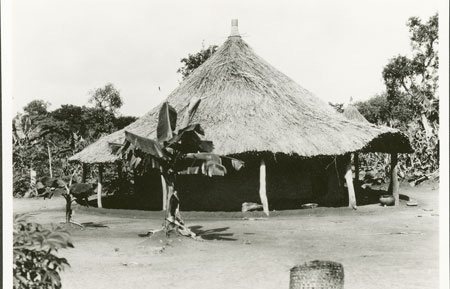

Unidad 3
Fotografías
La página web del Southern Sudan Project del Museo Pitt Rivers (Universidad de Oxford) reúne y pone en acceso digital más de 2500 fotografías tomadas por Edward Evans-Pritchard durante su trabajo de campo en Sudán entre 1926 y 1936. El sitio contiene un registro visual etnográfico de la vida cotidiana de pueblos como los Nuer y Azande, incluyendo ceremonias, viviendas, ganado y retratos.
Southern Sudan Project.
Museo Pitt Rivers (Universidad de Oxford)
